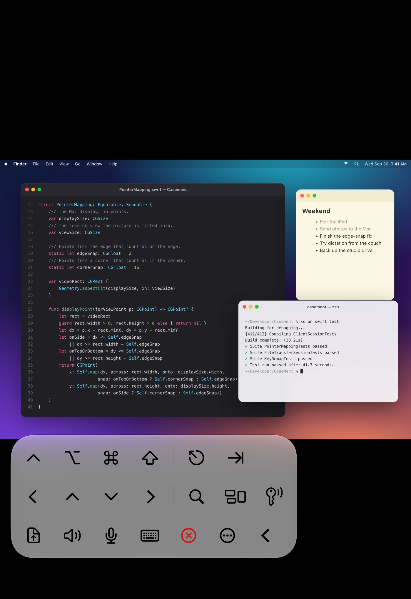
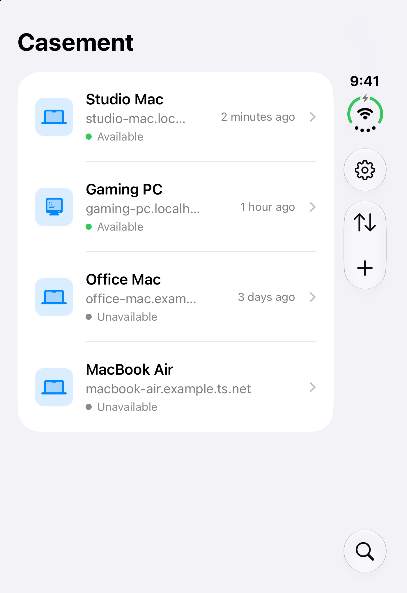
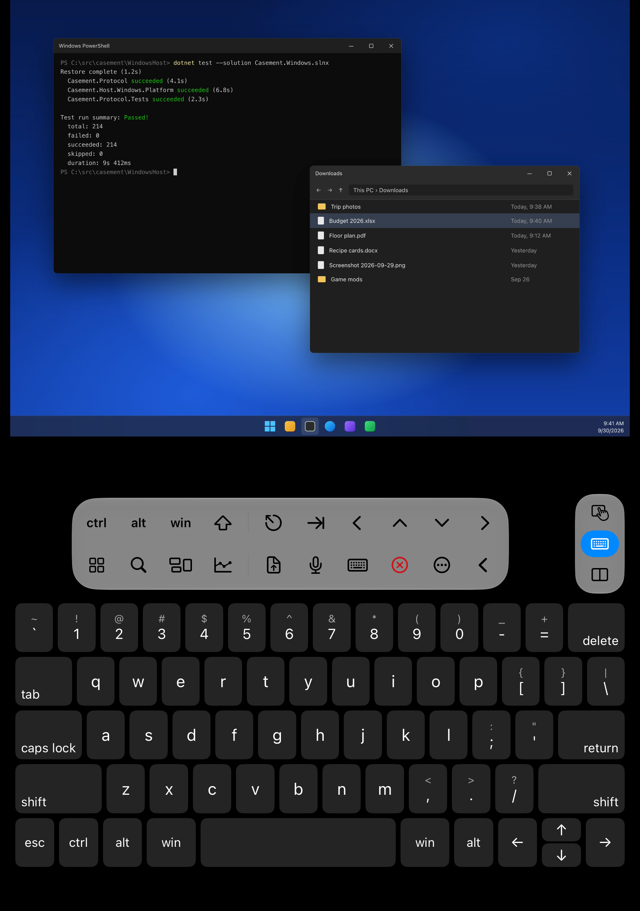
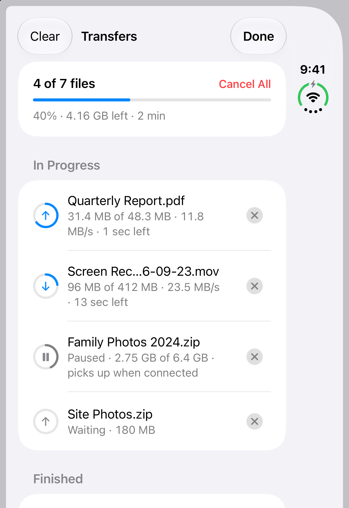

iPhone Duo
Fold it into
a laptop.
Your Mac on top, a keyboard below.

Folded
Your computer,
in your pocket.
Your computers
All your computers
in one place.

Mac and PC
Your Windows
PC, too.

File transfer
Files,
both ways.
